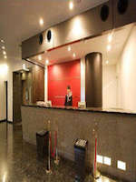

Conveniently located a 2-minute walk from the West Exit of Shinjuku Station [September 15, 2011 grand opening] 2-minute walk from Toei Oedo Line "Shinjuku Nishiguchi" station! JR "Shinjuku" station, conveniently located a 5-minute walk from the West Exit! I pursue the location and easy access, the two elements of a comfortable stay comfortable, complete with memory foam mat business, shopping, etc..
